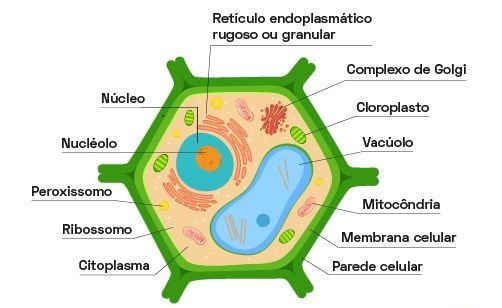

Representação da Célula Vegetal
Introdução
A célula vegetal é a unidade estrutural e funcional dos organismos do reino Plantae. Diferente da célula animal, ela possui estruturas exclusivas que permitem a realização da fotossíntese, o armazenamento de água e a sustentação da planta.
Essas células são fundamentais para o equilíbrio ecológico, pois produzem oxigênio e servem de base para a cadeia alimentar. Além disso, apresentam uma organização interna complexa, com diversas organelas que desempenham funções específicas. Compreender essas estruturas é essencial para entender como as plantas crescem, se desenvolvem e interagem com o ambiente.
Organelas da Célula Vegetal
Parede Celular
Estrutura rígida composta por celulose que envolve externamente a célula vegetal. Ela oferece proteção, forma e sustentação, além de controlar a entrada de água, evitando que a célula se rompa. A parede celular também permite que a planta mantenha sua estrutura mesmo em ambientes com variações de umidade.
Membrana Plasmática
Camada fina e flexível que envolve o citoplasma. Composta por uma bicamada lipídica com proteínas, ela regula a entrada e saída de substâncias, mantendo o equilíbrio interno da célula. Atua como uma barreira seletiva, permitindo que nutrientes entrem e resíduos saiam.
Citoplasma
Região interna da célula onde estão imersas todas as organelas. É composto por citosol, um líquido rico em proteínas e íons, que serve como meio para as reações químicas essenciais à vida celular. O citoplasma também ajuda na movimentação de substâncias dentro da célula.
Núcleo
Centro de controle da célula, onde está o DNA. O núcleo coordena atividades como crescimento, reprodução e síntese de proteínas. É envolvido por uma membrana nuclear com poros que regulam a troca de substâncias com o citoplasma.
Vacúolo Central
Estrutura grande e cheia de líquido que ocupa boa parte do volume celular. Armazena água, íons, pigmentos e resíduos. Também ajuda na pressão de turgor, que mantém a célula firme e contribui para a sustentação da planta.
Cloroplastos
Organelas responsáveis pela fotossíntese. Contêm clorofila, pigmento verde que capta a luz solar e transforma energia luminosa em energia química. Os cloroplastos possuem membranas internas chamadas tilacoides, onde ocorrem as reações luminosas, e também têm DNA próprio.
Mitocôndrias
Conhecidas como “usinas de energia” da célula, as mitocôndrias produzem ATP por meio da respiração celular. Elas utilizam glicose e oxigênio para gerar energia necessária às atividades celulares.
Retículo Endoplasmático
Rede de canais que transporta substâncias dentro da célula. O retículo rugoso possui ribossomos e participa da síntese de proteínas. O retículo liso atua na produção de lipídios e na desintoxicação celular.
Complexo de Golgi
Responsável por modificar, empacotar e distribuir proteínas e lipídios. Participa da formação da parede celular e do vacúolo, além de atuar na secreção de substâncias para fora da célula.
Ribossomos
Estruturas responsáveis pela síntese de proteínas. Podem estar livres no citoplasma ou aderidos ao retículo endoplasmático rugoso. São essenciais para o crescimento e reparo celular.
Peroxissomos
Organelas que degradam substâncias tóxicas, como o peróxido de hidrogênio, e participam do metabolismo de lipídios. Contribuem para a proteção da célula contra danos oxidativos.
Sobre
Trabalho desenvolvido por Felipe Martins de Lima, Jhuan Martins Bueno e Pedro Henrique Pereira Paiva, 1º série integrado em Informática, para a disciplina de Linguagem de Programação Web e Biologia. Este conteúdo tem como objetivo apresentar de forma clara e organizada as principais estruturas da célula vegetal, destacando suas funções e importância para os seres vivos e apresentar nossa maquete.